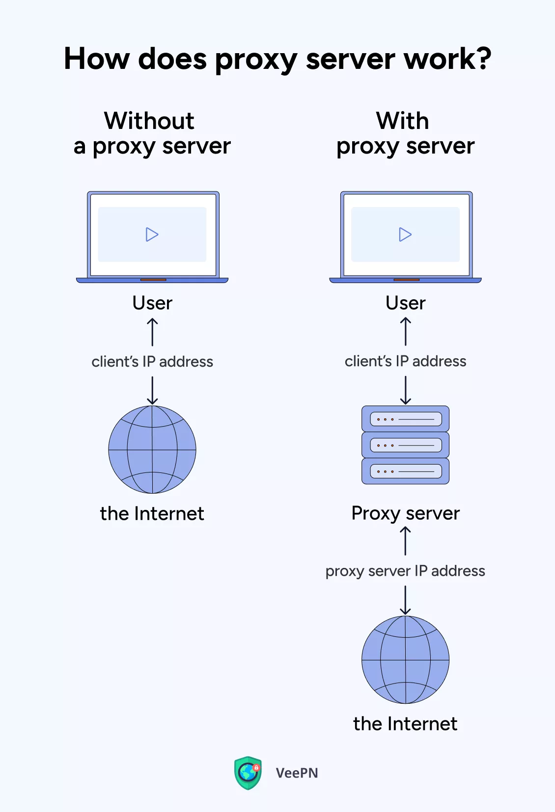
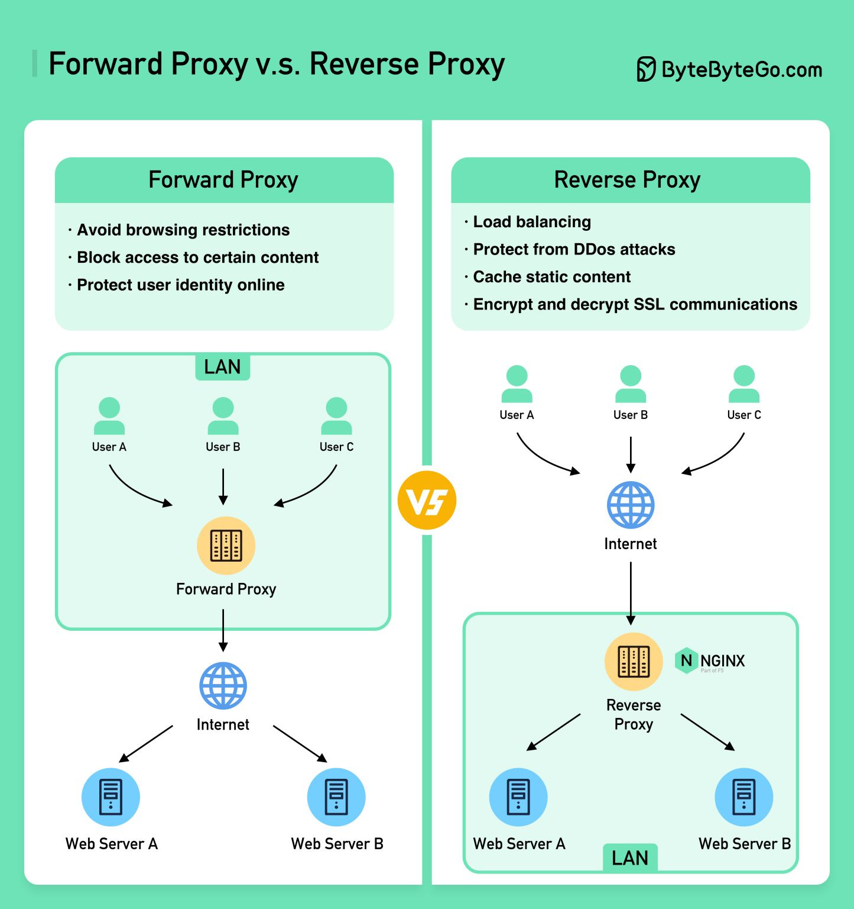
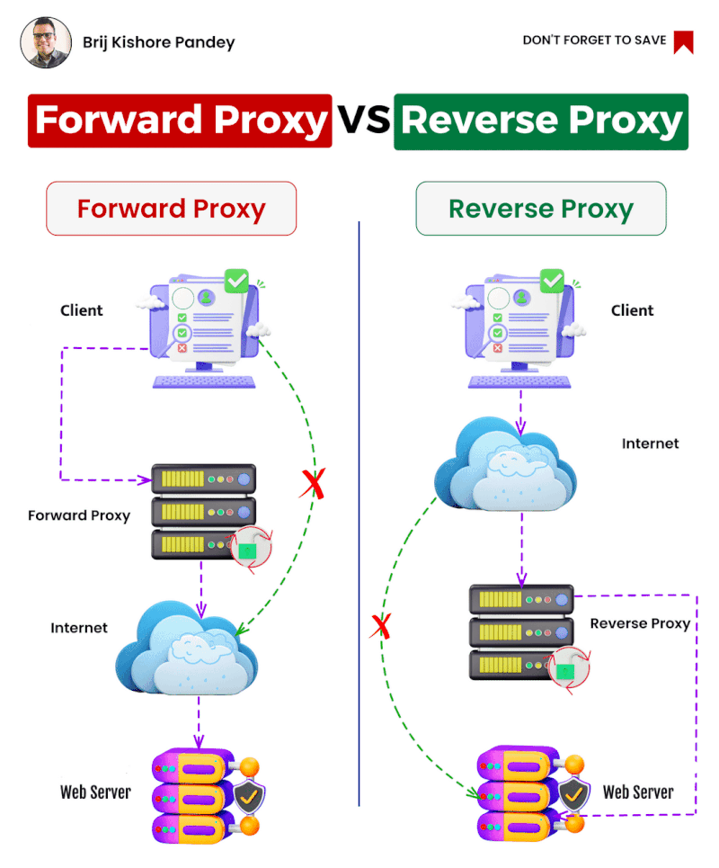

System Design Mastery
Master scalable systems with premium insights
🔄 Forward Proxy vs Reverse Proxy
A Proxy is an intermediary server that routes requests between clients and servers, but its role changes depending on whether it's a forward proxy or a reverse proxy.

📊 What is Proxy
🌐 FORWARD PROXY
1️⃣ What is it?
A Proxy Server (Forward Proxy) sits between client and the internet.
Flow:
Client → Proxy → Internet
It represents the client to the outside world.
Forward proxy protects clients while:
- 🔒 Hides client identity
- 🎛️ Controls access
- 🌐 Hides client IP from destination servers
📊 Forward proxy controlling client access to internet
2️⃣ Why Does It Exist? (What is the purpose of it?)
It solves:
- 🔒 Privacy protection (Security)
- 🚫 Content filtering
- 🎛️ Access control
- 💾 Caching external content
- 🌍 Bypassing geo restrictions
3️⃣ What Breaks Without It?
- 🔴 No central control of internet usage for client
- 🚫 Hard to restrict websites in companies
- 🌐 More direct exposure to internet
4️⃣ When to Use / When NOT to Use
✅ When to Use:
- 🏢 Corporate networks
- 🎓 Schools
- 🔒 Privacy requirements
❌ When NOT to Use:
- 🏠 Normal home browsing
- 📱 Small systems
5️⃣ Common Mistake
🚨 Confusing proxy with reverse proxy
Forward proxy protects clients, not servers.
6️⃣ Real App Example
In a company office:
You try to open YouTube.
Flow:
Your Laptop → Company Proxy → Internet
Proxy can:
- 🚫 Block YouTube
- 📊 Log activity
- ✅ Allow only work websites
These done using Forward proxy
🔁 REVERSE PROXY
1️⃣ What is it?
A Reverse Proxy sits between users and backend servers.
Flow:
Client → Reverse Proxy → Backend Servers
It represents the server to the outside world.
Reverse proxy protects servers while:
- 🛡️ Hides backend servers and distributes traffic
- 🌐 Hides server IPs from clients, improving security
- 💾 Can cache server responses to reduce load and speed up delivery
- 🔐 Handles SSL/TLS termination, freeing backend servers from encryption overhead
- 🛡️ Protects against DDoS attacks and filters malicious requests

📊 Reverse proxy controlling access to backend servers
2️⃣ Why Does It Exist? (What is the purpose of it?)
Reverse proxy solves:
- ⚖️ Load balancing
- 🔒 Security hiding backend
- 🔐 SSL termination
- 💾 Caching
- 🛡️ DDoS protection
3️⃣ What Breaks Without It?
- 🔴 Backend servers exposed directly
- 📈 Hard to scale
- 🔐 No centralized SSL
- 🛡️ Poor security
- 🚦 No traffic control
4️⃣ When to Use / When NOT to Use
✅ When to Use:
- 🚀 Production systems
- 🔧 Microservices
- 🖥️ Multiple backend servers
- 📈 High traffic apps
❌ When NOT to Use:
- 📱 Very small apps
- 🔧 Single internal tool
- 📚 Learning projects
Examples:
- ⚙️ Nginx
- ⚖️ HAProxy
- ☁️ Cloudflare
5️⃣ One Common Mistake
🚨 Thinking load balancer and reverse proxy are always different.
In reality:
Many reverse proxies also act as load balancers (e.g., Nginx).
6️⃣ Real App Connection
🛒 E-commerce
Client → Reverse Proxy → App Servers → DB
When you open Instagram:
Your Request → Reverse Proxy → Backend servers
You never directly talk to backend server.
🧠 Final Comparison (Very Important)
| Feature | Forward Proxy | Reverse Proxy |
|---|---|---|
| Protects | Client | Server |
| Used by | Clients | Servers |
| Sits Near | Client | Servers |
| Used for | Privacy, filtering | Load balancing, security |
| Controls | Outgoing traffic | Incoming traffic |
| Example | VPN | Nginx |
Reverse proxies are very common:
- ⚙️ Nginx
- ☁️ Cloudflare
Forward proxies are very common:
- 🌐 VPN
- 🛡️ Firewall

📊 Forward vs Reverse Proxy Comparison
🎯 Summary
A forward proxy represents clients to internet, while a reverse proxy represents servers to clients
Forward Proxy → Protects users
Reverse Proxy → Protects servers
Clients know about forward proxies; they usually don't know about reverse proxies.
Forward proxies focus on client privacy and access control
Reverse proxies focus on server protection, scalability, and performance.
💡 Pro Tip
Most modern applications use both types of proxies: Forward proxies for client security (corporate networks) and reverse proxies for server protection (web applications).
Popular solutions: Nginx (reverse proxy), Squid (forward proxy), Cloudflare (reverse proxy), corporate firewalls (forward proxy).